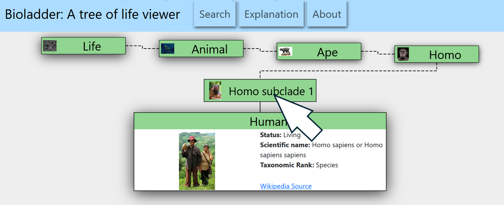

Explanation
What is BioLadder.org?
BioLadder.org is a website that lets you see how life evolved by moving up and down the tree of life.
How to navigate?
Click or tap on on whatever box you want to navigate to next.

Going up the tree of life takes you to earlier evolutionary splits, and going down takes you to later evolutionary splits.
You can search for organisms or clades using the search pop-up in the menu bar.
You use your browser's forward and back buttons to undo or redo steps you have taken.
How is this site organized?
This website shows the evolutionary tree of life through clades.
What are Clades?
Biologists rarely make claims about direct ancestry and descent (this particular animal descended from this other animal). Rather, they group animals by common ancestry into clades.
Clade Diagram:
A Clade consists of an organism and all its descendants. For example, in the diagram to the right, Coelurosauria is a clade made of some unknown dinosaur whose descendants including the giant Tyrannosaurus and all living birds. It's very unlikely we would find the precise dinosaur that everything in the Coelurosauria clade descendent from, but we still believe that everything in Coelurosauria is related and has some common ancestor.
This clade diagram also shows us that Birds are more closely related to the Velociraptor (a small feathered dinosaur with sickle-shaped claws) than to the Compsognathus (a small dinosaur the size of a turkey), and closer to the Compsognathus than to the Tyrannosaurus.
As scientists do their research, they debate precisely how organisms and clades are related, so if you visit the Wikipedia page for most of the clades on this site, you will see several proposed alternatives clade diagrams with minor variations.
We've tried to base our clade organization on more recent proposed clade diagrams from wikipedia, and we've optimized for navigability and for what we could find good pictures for on wikipedia. We also try to provide example members of each clade (focusing on earlier ones) to give a better visual indication of how organisms evolved over time. Also, there are many, many organisms we haven't gotten around to adding to our site.
Note: Some commonly known groups of organisms are not clades, so you wont find them on this site. For example, mammals and birds are both descended from animals that are called "reptiles," but neither mammals nor birds are considered "reptiles." Since the group "reptiles" doesn't include all its descendants, it is not a clade and isn't on this site.